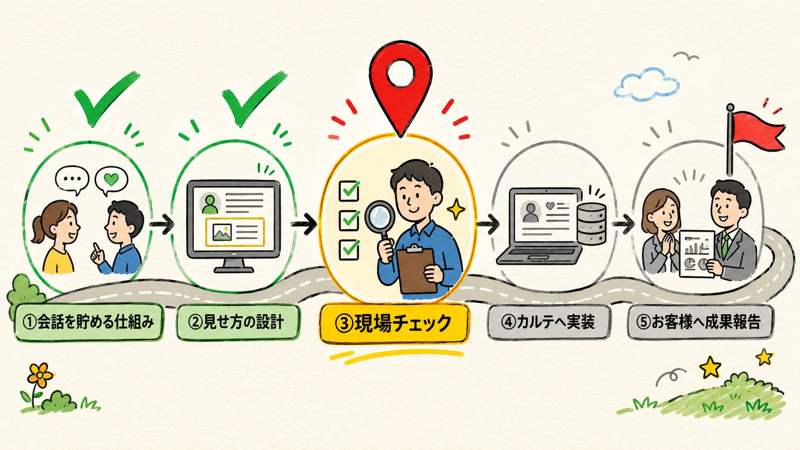

会話ログ活用プロジェクト — 行程マップと現在地
2026-07-12 作成 ／ うつせば社内共有用 ／ お客様とAIボットの会話記録を「顧客カルテ」と「お客様への成果報告」に活かす取り組み
結論（先に要点）
全5ステップのうち、①②が完了。いまは③「現場チェック」の返事待ちで、残りは④カルテへ実装 → ⑤お客様へ成果報告の2つ。
- ①会話を貯める仕組み と ②見せ方の設計 は完了（①はすでに本番で稼働中）
- ③現場チェック（いまここ）：CS現場の視点での最終確認。「OK」の一言で次へ進めます
- ④は開発作業のみ（設計・見本は確定済み）。⑤がゴール＝最終面談でお客様に「良くなった」を数字で見せる

各ステップの中身
緑=完了／赤=いまここ／グレー=これから
①
会話を貯める仕組み 完了・本番稼働中
- LINE・Chatworkでのお客様とAIボットのやり取りを、漏れなく・安全に記録する土台を整備
- グループでの会話も、担当者との1対1の会話も記録対象に。誰の発言かが正しく紐づくよう修復済み
- 通信トラブルが起きても記録が消えない「保険つき」の書き込み方式を導入済み
②
見せ方の設計 完了
- カルテのゴールを2つに整理：(A) 担当者が「次の一手」を素早く判断できる／(B) お客様に「良くなった」を数字で見せられる
- サポート期間（キックオフから3ヶ月）の実績を1枚にまとめる「成果サマリー」の見本を作成
- 載せる指標（満足度率・解決率・相談件数・エスカレーション・時間削減の金額換算）と見せ方は承認済み
③
現場チェック いまここ（返事待ち）
- CS現場の視点で見本を最終確認（担当：前田さん・所要5分ほど）
- 確認ポイントは3つ：載せる情報と並び／最終面談で使う流れ／言葉の違和感
- 「このままでOK」or「ここを直したい」の一言で次のステップへ（今週中目標）
④
カルテへ実装 これから（設計は確定済み）
- 顧客カルテに「3ヶ月実績」タブを追加（期間を指定して集計。過去の記録もさかのぼって集計可能）
- 顧客ごとの解決率・エスカレーション件数を新たに表示（いまは全体でしか見られない）
- お客様に渡せる成果サマリー1枚（印刷・PDF対応）を出力できるように
⑤
お客様へ成果報告 ゴール
- 最終面談（キックオフから3ヶ月）で成果サマリーを提示：「削減できた時間と金額」「満足度・解決率の変化」「質問の中身の変化」
- ご案内資料で以前からお約束している「成果サマリー」が、手作業なしで出せるように
- そのまま継続・次のご支援のご提案につなげる
ゴールの先にある発展（任意・別途相談してから）
記録の本格スタート
入金確認できたクライアントから記録をON（まず1〜2社でお試し）
同意の取り方ガイド
担当者向け「お客様への説明の仕方」ガイドを作成（イラストつき）
週次の自動集計
数字が毎週自動でまとまる仕組み。カルテの推移表示が安定
ボット改善ループ
会話記録からAIボットの弱点（answer精度・未解決）を見つけて改善につなげる
次の一手
作成: 2026-07-12（佐宗＋AI）。本ページ内の画面見本・数字はすべてダミーです。詳細な設計資料・モックは社内フォルダ（projects/会話ログ活用/）にあります。